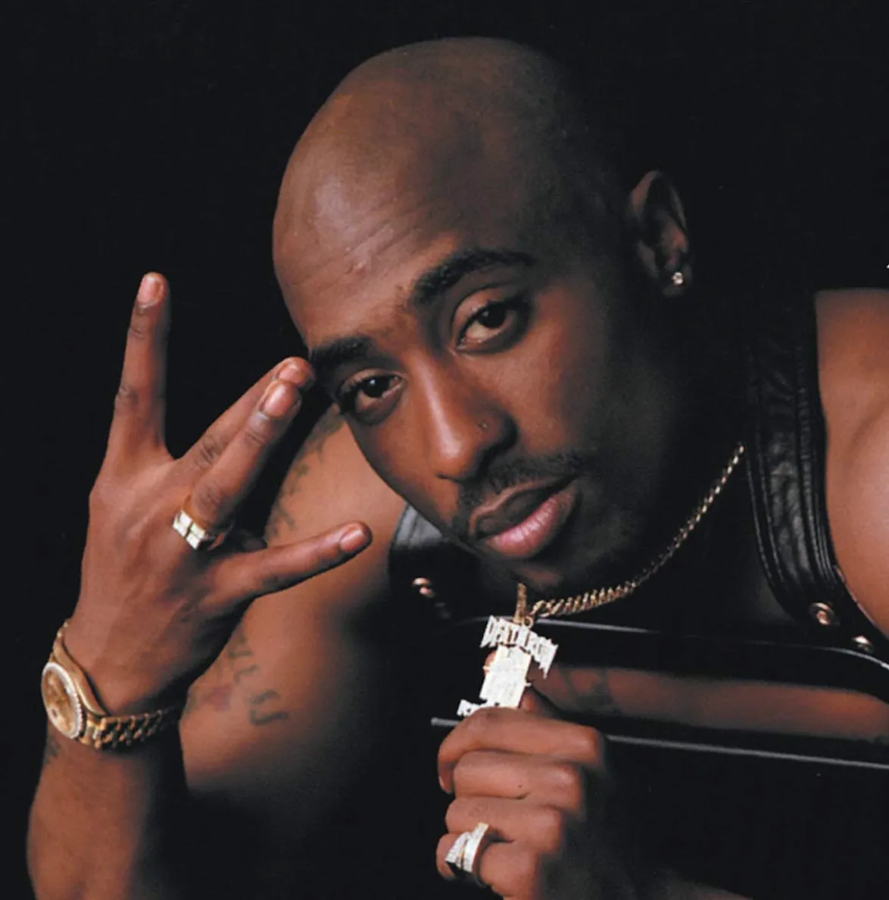

Kanye West
Ye (born Kanye Omari West; Atlanta, June 8, 1977), better known as Kanye West, is an American rapper, singer, songwriter, music producer, politician, and fashion designer.

Kendrick Lamar
Kendrick Lamar Duckworth (Compton, June 17, 1987) is an American rapper, songwriter, and music producer. Winner of 17 Grammy Awards, he is one of only two musicians outside classical music to receive the Pulitzer Prize, considered one of the most influential artists of his generation and one of the greatest rappers and lyricists of all time.

Eminem
Marshall Bruce Mathers III, better known by his stage name Eminem (St. Joseph, October 17, 1972), is an American rapper, songwriter, music producer, and actor. He quickly gained popularity in 1999 with the release of the album *The Slim Shady LP*, which won the Grammy Award for Best Rap Album of the Year.

Tupac Shakur (2Pac)
Tupac Amaru Shakur (born Lesane Parish Crooks; New York, June 16, 1971 – Las Vegas, September 13, 1996), better known by his stage names 2Pac, Makaveli, or simply Pac, was an American rapper, actor, and songwriter, considered by many as one of the greatest and most important rappers of all time.

Travis Scott
Jacques Berman Webster II (Houston, April 30, 1991), better known by his stage name Travis Scott (formerly stylized as Travi$ Scott), is an American rapper, singer, songwriter, and music producer.

Snoop Dogg
Calvin Cordozar Broadus Jr. (Long Beach, October 20, 1971), known by his stage names Snoop Doggy Dogg, Snoop Dogg, Snoop Lion, and Snoopzilla, is an American rapper, singer, songwriter, music producer, and actor.
Drake
Aubrey Drake Graham (Toronto, October 24, 1986), known simply as Drake, is a Canadian rapper, singer, songwriter, music producer, actor, and entrepreneur.

Jay-Z
Shawn Corey Carter (New York, December 4, 1969), better known by his stage name JAY-Z (also stylized Jay Z or Jay-Z), is an American rapper, songwriter, producer, and entrepreneur.

Nicki Minaj
Onika Tanya Maraj (Saint James, December 8, 1982), known by her stage name Nicki Minaj, is a Trinidadian rapper, singer, songwriter, model, and actress based in the United States.
While there are many more famous rappers, listing them all here would take forever. So if you want to learn more about rappers and their discographies, visit the page of the best albums and discover more! And if you want to know even more, how about exploring some Brazilian rappers? Just access the page of Brazilian rappers (they are all in Portuguese tho)!